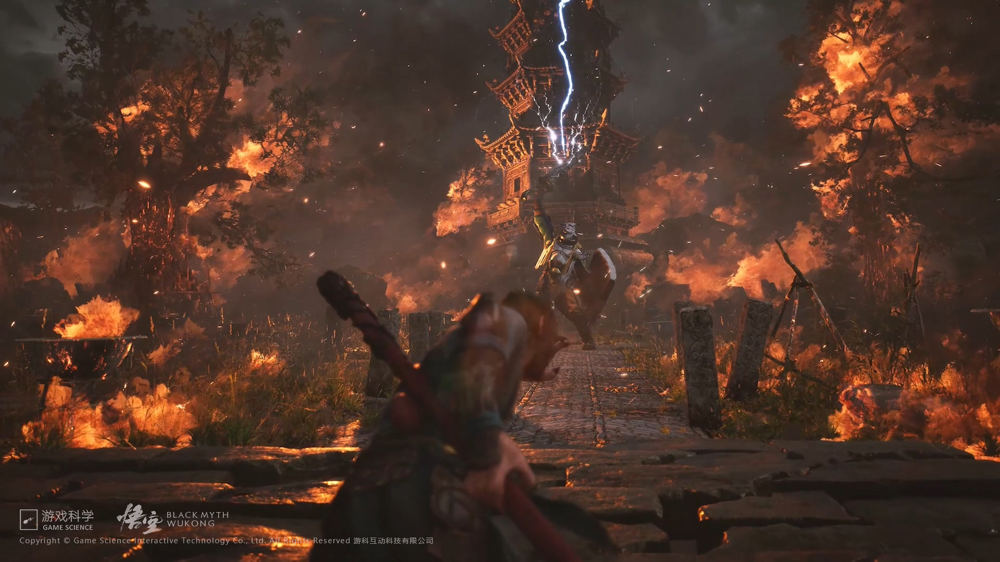
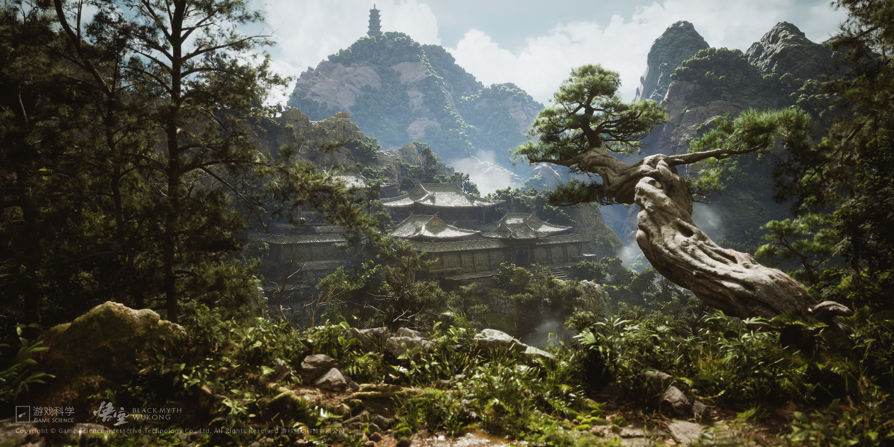
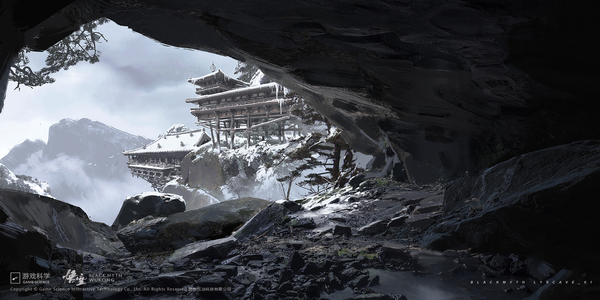

Game screenshot: Wukong encounters the White Dragon

Game screenshot: Wukong faces the Bull DemonGame screenshot: Wukong confronts the Black Bear SpiritGame screenshot: Wukong fighting against a bone monsterGame screenshot: Wukong fighting against the White Dragon

Game scene: ancinet templeGame scene: home of the Spider MonstersGame scene: foggy village

Game scene: snow mountain